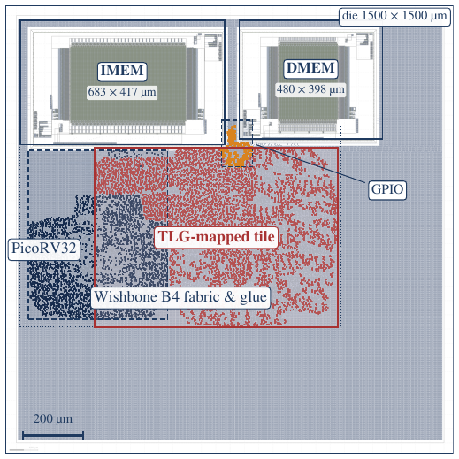

01 · The question
A threshold gate fires when a weighted sum crosses a line.
Binary neural networks reduce every multiply to XNOR and every dot product to a popcount. A BNN neuron is a threshold gate. The catch is that silicon threshold gates have almost always depended on a special device to do the summing:
Current-mode
Summed branch currents. Bias- and matching-sensitive.
Capacitive
Charge redistribution onto weighted capacitors.
Memristor
Resistance holds the weight and does the analog sum.
Embedded flash
Programmable threshold devices (e.g. TULIP).
Could a threshold-logic BNN live in an ordinary digital RTL-to-GDS flow, inside a complete SoC, using nothing but standard cells?
02 · One neuron
y = [ popcount( x XNOR w ) ≥ θ ]
Each TINKER neuron takes a 64-bit input x and a 64-bit weight w. Where the two agree, XNOR outputs a 1. Count the ones, compare with a 7-bit threshold θ, and you get one output bit. Try it: click bits to flip them, or drag θ.
03 · The trick
A 64-input threshold gate is hard to build.
Build it literally and you get a huge-fan-in summing node, which is exactly what needs an analog primitive. TINKER starts from the 64 XNOR bits instead.
Cut it into chunks.
The 64 bits become ten 6-bit chunks and one 4-bit residue. Each chunk is small enough to be an ordinary Boolean function.
Each chunk becomes a tiny lookup table.
A 6-bit chunk's popcount is a 6→3 function (4→3 for the residue). Yosys synthesizes each one into
sky130_fd_sc_hd muxes and AOI cells, with no special device anywhere.
An adder tree sums the subcounts.
Eleven 3-bit subcounts feed a conventional width-7 adder tree, giving the full popcount (0–64).
A comparator makes the decision.
The 7-bit sum is compared against θ. The result is a threshold gate built entirely from digital standard cells: it bounds fan-in and ports to any process with a standard-cell library.
04 · The tile
Sixteen neurons, one shared input, two cycles.
The BNN tile holds 16 of these neurons side by side. They share one registered 64-bit input.
A configuration register file stores 16 weights (64 b) and 16 thresholds (7 b), loaded once per network.
A strobe on x_valid starts the pipeline, and y_valid pulses two cycles later
with a 16-bit answer.
05 · The SoC
A complete, software-orchestrated SoC.
The tile is not a standalone macro. A PicoRV32 RISC-V core drives it over a Wishbone B4 bus, next to OpenRAM instruction and data memories, all in the open sky130A flow.
Boot.
The core fetches bare-metal firmware (about 1.5 KB of RV32I) from IMEM, which also holds the binary weights.
Load the network.
Firmware writes the weights and thresholds into the tile's configuration registers. 64-bit values go over the 32-bit bus as a LO write then a HI write.
Feed an image.
Input bits are read from DMEM and written to the tile's x register, which starts an evaluation.
Poll, then read.
Firmware polls STATUS.BUSY, reads the 16-bit
YOUT, and clears DONE. Writes that land while busy are dropped on purpose, so a buggy
program hangs visibly instead of corrupting an inference.
Four evaluations, then software.
Layer 1 takes four tile evaluations (one per image quadrant). The 10-class output layer then runs on the PicoRV32 itself (popcount, bias, argmax), for 17,068 cycles per image.
06 · Try it
Run the deployed network in your browser.
These are the exact integer weights and thresholds that the SoC runs. The JavaScript port matches the hardware's Python golden model bit-for-bit on all 10,000 MNIST test images (85.60 % accuracy). Draw a digit, or pick one from the test set.
Draw one digit, big and centered.
① 2×2 pool → 14×14
② 4 quadrants, median-binarized (49 b each)
③ Tile: 4 evaluations × 16 neurons → 64 hidden bits
④ PicoRV32: logit = 2·popcount(h XNOR w) − 64 + bias → argmax
Preprocessing for drawings imitates MNIST (crop, scale to 20×20, center of mass). The network is small (a grouped 49→16 ×4 → 10 binary MLP), so it will get some drawings wrong. That is a fair picture of an 85.6 % model.
07 · Silicon
1.5 × 1.5 mm, taken all the way to GDS.
The SoC goes through LibreLane 3.0.3: Yosys, OpenROAD, Magic, KLayout, and Netgen. The IMEM and DMEM macros are placed by hand along the top edge, with standard-cell logic below.
- 0 KLayout DRC errors
- 0 Netgen LVS errors
- 0 KLayout XOR differences
- 0 antenna violations
- +0.51 ns setup slack at TT, 100 MHz
- 9 STA corners, hold clean at all

08 · Where the power goes
of SoC power is the TLG tile, which draws the same 11.47 mW in both designs.
First version: memories as register files.
With flip-flop register-file IMEM/DMEM, the SoC burns 106.06 mW. Memory and its clock tree dominate, and the tile is only 10.8 % of the budget.
Swap in OpenRAM macros.
Total power drops to 47.21 mW. The tile's netlist is byte-identical, so it still draws 11.47 mW, but its share jumps to 24.3 %: the largest active datapath bucket.
Compute becomes the thing to optimize.
Once storage stops hiding it, the BNN datapath is first-order at SoC scale. That makes tile-level ideas like threshold-logic decomposition worth pursuing, and they are measurable in a fully open flow.
09 · Headline numbers
95 % CI [84.90, 86.27]
124,113 inferences / J
activity-aware, max_ff corner
vs. integer golden model
10 · Honest scope
What this is, and what it isn't.
It is
- A portable, fully digital way to map a threshold function onto standard cells.
- A complete RISC-V SoC taken RTL → GDS in open tools, with clean sign-off.
- Measured, activity-aware SoC-level power, not a projection from a single block.
It isn't
- An efficiency record: advanced-node commercial BNN accelerators are far lower energy.
- Large: one 16-neuron tile and a grouped MNIST MLP. There is no tape-out.
- Closed at every corner: 100 MHz closes at TT. The slow corner is limited by OpenRAM's single-corner Liberty.
Read more
Paper, poster, and everything needed to reproduce it.
@inproceedings{sahruri2026tinker,
author = {Sahruri, Abdullah and Margala, Martin},
title = {{TINKER}: A Fully-Digital Threshold-Logic-Mapped {BNN} Inference {SoC}},
booktitle = {2026 IEEE 39th International System-on-Chip Conference (SOCC)},
year = {2026}
}